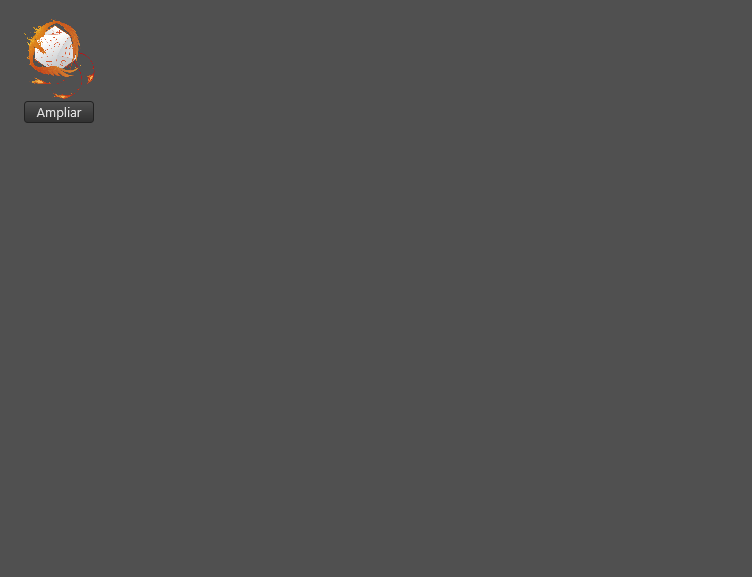
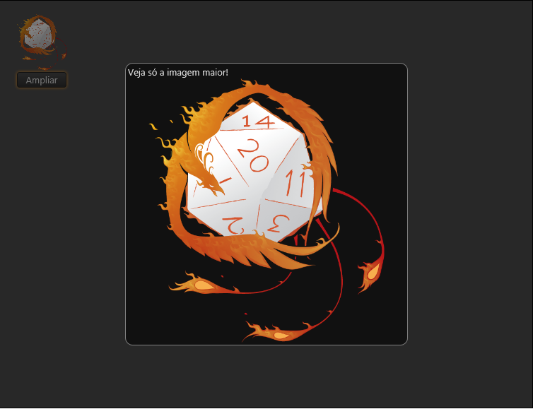
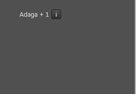
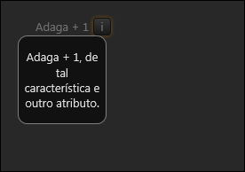

Tag popup
Tag popup
A tag/componente popup representa um componente visual que fica escondido na interface e é posteriormente apresentado, tomando a atenção para si, na forma de um popup.
Herança
O popup possui todas as características da tag layout.
Veja:
Características
Além das características herdadas, o popup possui também as seguintes características:
Propriedades e atributos
| Propriedade | Tipo | Valor Padrão | Descrição |
|---|---|---|---|
| autoScopeNode | Boolean | true | Define o comportamento dos campos de edição que estão dentro deste popup quando a propriedade "scopeNode" for nil. true - se scopeNode for nil, os componentes de edição usarão o scopeNode do formulário. false - se scopeNode for nil, os componentes de edição não funcionarão, pois não haverá um scopeNode. Observação: O valor padrão destee atributo para plugins que forem compilados com o SDK 3.4 ou inferior é false. |
| cancelable | Boolean | true | Indica se o popup pode ser cancelado pelo usuário. Quando false, a única maneira de fechar o popup é via programação ao invocar o método "close" com o parâmetro "forcar" igual a true. |
| backOpacity | Float | 0.85 | Indica a opacidade do fundo ao exibir este popup. Um valor entre 0.0 e 1.0, onde 0.0 = Fundo totalmente transparente e 1.0 = Fundo totalmente opaco. Esta opacidade se refere ao fundo que é aplicado a fim de tirar a atenção da interface e chamar a atenção para o popup. |
| drawContainer | Boolean | true | Define se o popup vai automaticamente desenhar uma borda que delimita o conteúdo do popup. |
| scopeNode, nodeObject ou ** node** | Objeto Nodo | nil | Define em qual objeto nodo de um NodeDatabase os controles de edição deste popup devem salvar os dados. Observações: Só é possível alterar esta propriedade utilizando código Lua. Se nil, o nodeObject do form será utilizado para salvar dados se a propriedade autoScopeNode for true. Esta propriedade é um "atalho" para os métodos "setNodeObject" e "getNodeObject" desta tag. Veja também: NodeDatabase Escopo de Dados |
Eventos
| Nome do evento | Descrição |
|---|---|
| onClose | Este evento é invocado quando o popup for fechado. Parâmetros: canceled - Boolean indicando se o popup foi cancelado ou se foi fechado normalmente. |
| onCanClose | Este evento é invocado quando o popup estiver prestes a ser fechado. Retorne false para impedir o popup de ser fechado ou true para autorizar o fechamento do popup. Parâmetros: canceled - Boolean indicando se o popup será cancelado ou se será fechado normalmente. |
| onCalculateSize | Se você quiser definir a largura e altura do popup de forma dinâmica, trate este evento. Parâmetros: dueToResize - Booleano indicando se a interface mudou de tamanho e por isso é necessário recalcular o tamanho do popup. width - Largura padrão height - Altura padrão Retorne 2 números, o primeiro contendo a largura e o segundo contendo a altura (Exemplo: return 100, 200;) |
| onNodeReady | Este evento é invocado quando o objeto nodo de um NodeDatabase associado a este popup está pronto para ser usado. Quando este evento é chamado, você pode assumir: a propriedade "node" do poup está diferente de nil e possui uma referência válida para um objeto nodo. O processo de carregamento do nodeDatabase associado já chegou ao fim. Você já consegue acessar os dados armazenados nele normalmente. |
| onNodeUnready | Este evento é invocado quando o objeto nodo de um NodeDatabase associado a este popup deixa de estar pronto para ser usado. Quando este evento é chamado, você pode assumir: a propriedade "node" do popup não contém mais uma referência válida para um objeto nodo. |
| onNodeChanged | Este evento é invocado um objeto nodo de um NodeDatabase é associado ou desassociado a este popup. Ver NodeDatabase |
Veja Tratando eventos do Lua Form
Métodos
É possível invocar métodos dos controles usando código LUA.
| Método | Descrição |
|---|---|
| popup:show(); ou popup:showPopup(); | Exibe o popup na interface. O popup será exibido no centro a interface. |
| popup:close(); ou popup:closePopup(); | Fecha o popup. |
| popup:show(placement, control); ou popup:showPopup(placement, control); ou popup:showPopupEx(placement, control); | Exibe o popup na interface permitindo o programador definir onde ela será exibida. Parâmetros: placement - String que define onde o popup será exibido em relação ao "control". Pode ser um destes valores: "bottom" - abaixo de control "top" - acima de control "left" - à esquerda de control "right" - à direita de control "center" - no centro de control "bottomCenter" - abaixo de control e centralizado horizontalmente "topCenter" - acima de control e centralizado horizontalmente "leftCenter" - à esquerda de control e centralizado verticalmente "rightCenter" - à direita de control e centralizado verticalmente "mouse" - onde o mouse está atualmente "mouseCenter" - centralizado onde o mouse está atualmente. control - Um controle/tag lua à qual o parâmetro "placement" se refere. Se nil, o form será utilizado. |
| popup:close(cancelar, forcar); ou popup:closePopup(cancelar, forcar); | Fecha o popup. Parâmetros: cancelar - Booleano indicando se o popup será cancelado ou se será fechado normalmente. Caso este parâmetro seja omitido, o valor padrão "false" será adotado. forcar - Booleano indicando se é para forçar o fechamento do popup mesmo se ele tiver atributo "cancelable" com true. Caso este parâmetro seja omitido, o valor padrão "false" será adotado. |
| popup:setNodeObject(nodeObject) | Define em qual objeto nodo de um NodeDatabase os controles de edição deste popup devem salvar os dados. Parâmetros: nodeObject – Um objeto nodo (de um NodeDatabase) ou nil. Observação: Se nil, o nodeObject do form será utilizado para salvar dados. Veja também: NodeDatabase Escopo de Dados |
| popup:getNodeObject(); | Retorna o objeto nodo (de um NodeDatabase) no qual os controles de edição deste popup devem salvar os dados. nil é retornado quando não há nodo associado. Observação: Se nil, o nodeObject do form será utilizado para salvar dados. Veja também: NodeDatabase Escopo de Dados |
Exemplos
Exemplo 1 - Uma imagem pequena que pode ser ampliada através do uso do popup
| \<?xml version="1.0" encoding="UTF-8"?> \<form name="frmFichaTeste"> \<!-- Popup --> \<popup name="popMeuPopup" width="400" height="400" backOpacity="0.5"> \<label align="top" text="Veja só a imagem maior!" autoSize="true"/> \<image align="client" src="/imagens/fenix.png"/> \</popup> \<!-- Invocador do Popup --> \<image src="/imagens/fenix.png" left="20" top="20" width="80" height="80"/> \<button text="Ampliar" width="70" left="25" top="102" onClick="self.popMeuPopup:show();"/> \</form> |
|---|


Neste exemplo foram usadas também:
Exemplo 2 - Mostrando o popup abaixo de um componente na interface
| \<?xml version="1.0" encoding="UTF-8"?> \<form name="frmFichaTeste"> \<!-- Popup --> \<popup name="popMeuPopup" width="100" height="100" backOpacity="0.5"> \<label align="client" horzTextAlign="center" text="Adaga + 1, de tal característica e outro atributo." /> \</popup> \<!-- Invocador do Popup --> \<label name="labNome" left="20" top="20" width="80" text="Adaga + 1" horzTextAlign="trailing" height="20"/> \<button text="i" width="20" left="105" top="20" height="20" onClick="self.popMeuPopup:show('bottom', self.labNome);"/> \</form> |
|---|
 
Created with the Personal Edition of HelpNDoc: What is a Help Authoring tool?